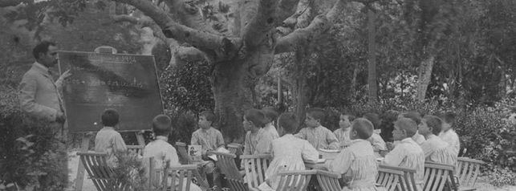
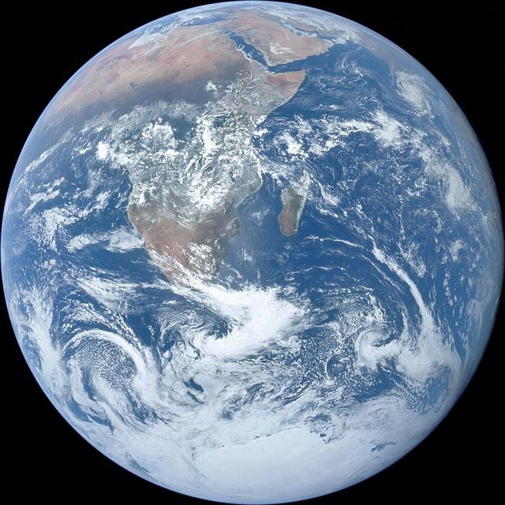
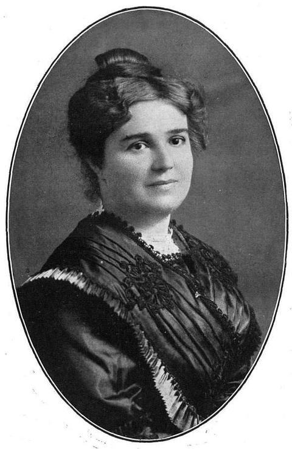

L’escola obligatòria, comptada en hores.
Abans de veure-ho, fes la teva aposta.
Cada quadret són 10 hores de classe. Mínims recomanats per al curs 2024/25, mitjana de totes les comunitats autònomes (Eurydice).
A primària són unes quatre hores i mitja de classe al dia. A l’ESO, unes sis.

Són hores d’instrucció de 60 minuts, en un calendari d’almenys 175 dies lectius. No hi entren l’esbarjo, els deures ni les extraescolars. Són mínims: cada comunitat i cada centre en pot fer més.
Comparem 20 països europeus. En quin lloc creus que queda Espanya en hores de classe a l’ESO?
A l’ESO, Espanya és el segon país europeu amb més hores per curs. Però això no vol dir que sigui el que en fa més en total, ni el que aprèn més.
La llei fixa un mínim de 175 dies lectius i les vacances d’estiu són llargues. Les hores es concentren: amb dades de 2015, l’OCDE ja situava Espanya entre els pocs països amb sis hores o més de classe diària a secundària.
L’Estat i les comunitats fixen les hores de cada matèria. En altres països, com Finlàndia o els Països Baixos, la normativa dona un total per a diversos cursos i cada centre el reparteix.
La calor pot explicar un estiu llarg, però no el total d’hores: Portugal (818 h) i França (973 h) en fan menys a l’ESO.
És una idea habitual al debat, però no l’hem trobada quantificada en cap estudi oficial.

La Terra des de l’Apol·lo 17, 1972. NASA.
Dels deu països més poblats del món, només tres publiquen hores comparables. La resta s’han de calcular, estimar o no se saben.
Dels deu països menys poblats, només Liechtenstein té dades oficials comparables: 753 h a primària i entre 928 i 946 h a secundària. El Vaticà no té sistema escolar propi, i de Tuvalu, Nauru, Palau, San Marino o les Illes Marshall no hi ha xifres en cap base de dades internacional.
A la major part del món, nois i noies van a la mateixa escola. Però en alguns països la separació és la norma.
Segons la UNESCO, en el 60% dels sistemes educatius estudiats menys del 5% de les escoles de primària són d’un sol sexe. La separació és habitual a Xile, Irlanda, Israel o Singapur, i predomina en molts països de majoria musulmana.
El percentatge d’escoles i el d’alumnes no sempre coincideixen. A l’Iran, les escoles separades són grans i públiques; a Rússia, petites i privades.
La llei no permet pagar amb diners públics les escoles que separen per sexe, i el Tribunal Constitucional ho va avalar el 2023. El nombre de centres concertats que separen ha anat baixant. Dels privats sense concert, ningú no en porta el compte.
Separar alumnes no és només una qüestió de sexe. L’OCDE mesura fins a quin punt els alumnes rics i pobres van a escoles diferents, i conclou que la lliure elecció d’escola tendeix a augmentar aquesta separació. A Catalunya, el Síndic de Greuges en fa el seguiment anual.
Que l’alumnat faci moltes hores no vol dir que cada professor en faci més.

dels professors de secundària a Espanya diuen que la feina administrativa els genera bastant o molt d’estrès, davant del 52% de mitjana a l’OCDE.
El Govern ha portat al Congrés un projecte de llei que fixaria per als centres públics un màxim de 23 hores lectives setmanals a infantil i primària i 18 a la resta d’etapes, i ratios de 22 alumnes a primària i 25 a l’ESO. Al juny de 2026 el Congrés va rebutjar les esmenes a la totalitat i el text continua la tramitació.
Hores de classe
Nois i noies
Docents
Imatges


.jpg){kind=link}